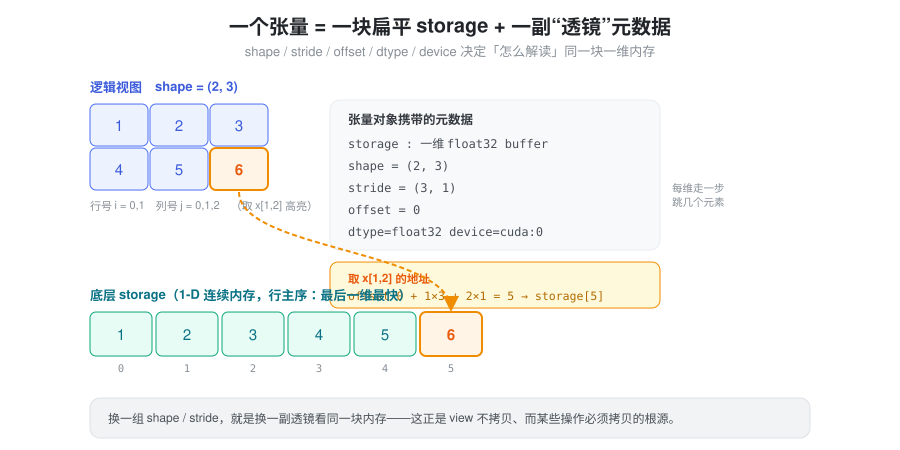
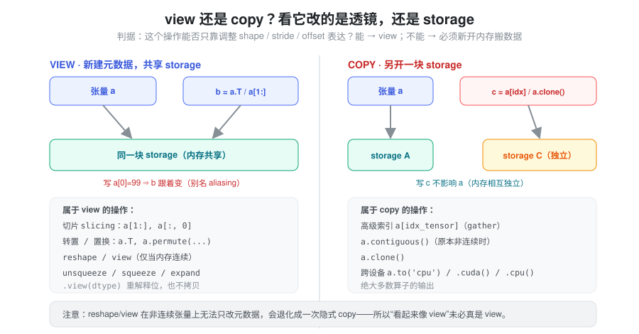
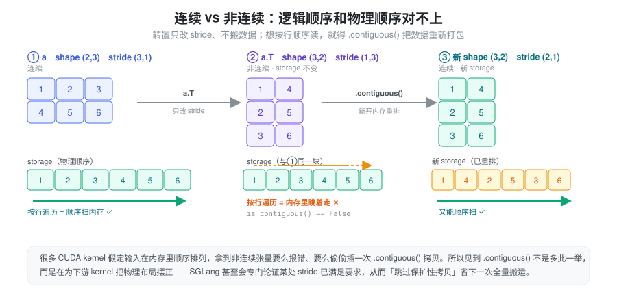
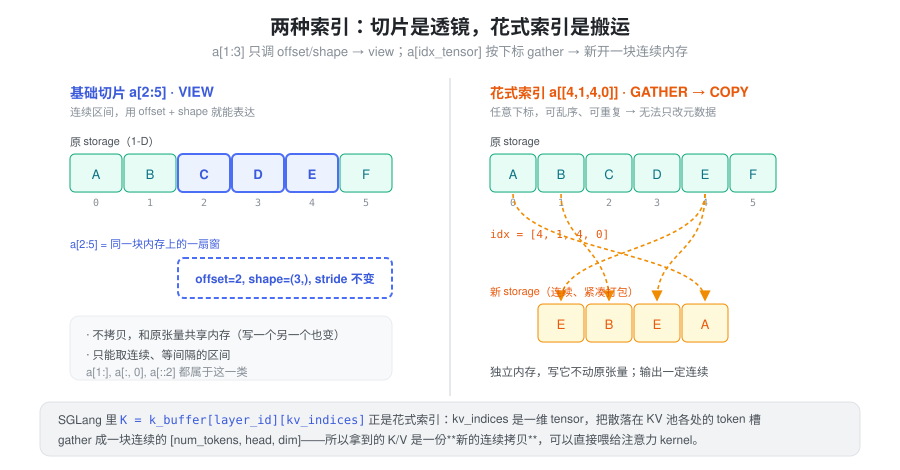
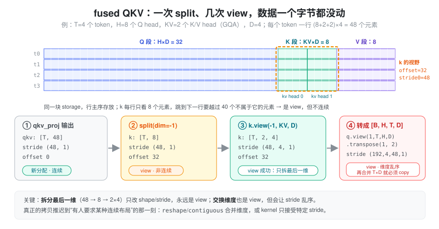
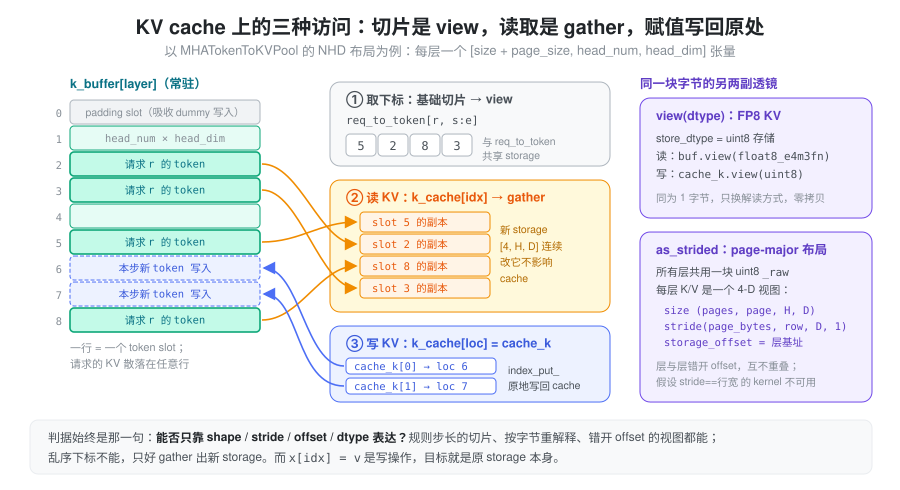
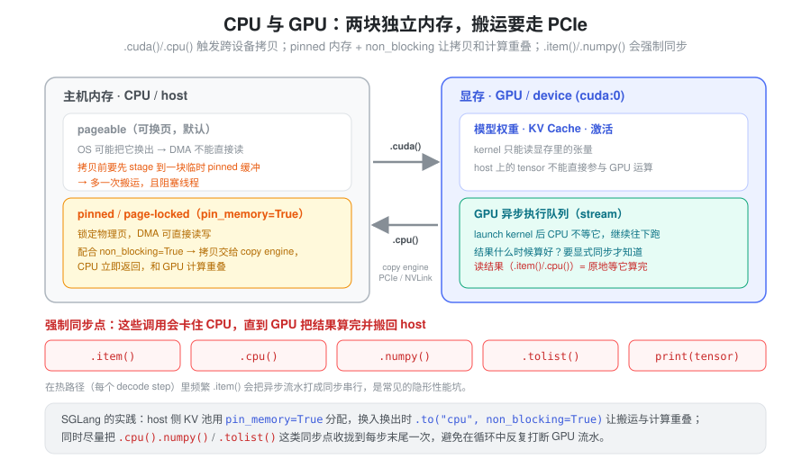

b = a.T到底有没有搬数据？a[1:]和a[idx]看着都是索引，为什么一个共享内存、一个却复制了一份？- fused QKV 投影之后
split出来的k明明 shape 对，为什么is_contiguous()是 False？下游哪一步才真正付出拷贝？ - 一个张量明明 shape 对得上，喂给 kernel 却报 “not
contiguous”，
.contiguous()加在哪、为什么能省掉？ .cpu()、.item()这种“只是取个值”的调用，怎么就成了性能瓶颈？
这些问题可以从同一套底层模型出发理解：张量如何解释存储、操作是否共享数据，以及执行发生在哪个设备上。本篇以普通 dense strided tensor 为例建立这个模型，再把它落到 LLM 推理里最常见的两处：QKV 的维度变换，以及 KV cache 的读写。稀疏、量化等特殊张量需要另外检查其存储格式。
抽象：张量 = 一块扁平 storage + 一副“透镜”
核心的一句话：张量本身不存数据，它只是一副解读内存的“透镜”。
数据躺在一块一维、连续的
storage（显存或主机内存上的裸
buffer）里；张量对象另外携带一组元数据，决定“怎么把这块一维内存看成多维数组”：
shape：每一维有多长；stride：每一维走一步，在 storage 里要跳过几个元素；storage_offset：从 storage 的第几个元素开始看；dtype/device：按什么类型、在哪块设备上解读。
取元素 x[i, j]
不是“查表”，而是一次地址算术：
addr(x[i0, i1, ..., ik]) = storage_offset + Σ i_d × stride[d]这件事是理解后面一切的支点——因为“换一副透镜”（改 shape/stride/offset）几乎免费，而“重排 storage 里的字节”必须真刀真枪地搬数据。

用一个具体算例感受三者如何配合。设
a = torch.arange(12).view(3, 4)，stride 为
(4, 1)、offset 为 0：
| 表达式 | shape | stride | offset | 取 [1, 1] 落在 storage 的位置 |
|---|---|---|---|---|
a |
(3, 4) | (4, 1) | 0 | 0 + 1×4 + 1×1 = 5 |
a[1:, 2:] |
(2, 2) | (4, 1) | 6 | 6 + 1×4 + 1×1 = 11 |
a.T |
(4, 3) | (1, 4) | 0 | 0 + 1×1 + 1×4 = 5 |
a[:, ::2] |
(3, 2) | (4, 2) | 0 | 0 + 1×4 + 1×2 = 6 |
四个张量共享同一块 12 个元素的 storage，没有一个字节被搬动。切片改的是 offset 和 shape，转置交换 stride，步长切片放大 stride。
有了这个模型，“这个操作要不要拷贝”就有了统一判据：它能不能只靠调整元数据来表达？ 能，就是 view；不能，就必须新开一块 storage 把数据搬过去。
混淆点一：view 还是 copy，以及 aliasing
view 新建一组元数据、但和原张量共享同一块
storage——所以改一个，另一个跟着变（别名
aliasing），这是 bug
的常见来源，也是零拷贝的来源。copy 则另开
storage，两者内存独立。

切片、转置、permute、unsqueeze/squeeze/expand、split/chunk/unbind
通常产生共享 storage 的 view；高级索引读取
a[idx_tensor]、.clone()、需要重排的
.contiguous()、实际跨设备的 .to()
则会分配新存储。普通计算算子也通常生成独立输出，但不宜把“新输出”全部称为输入数据的
copy。
这里必须区分 view() 与
reshape()：view() 只在 shape 与
stride
兼容时成功，否则报错，不会隐式复制；reshape()
则可能返回 view，也可能复制。非连续张量也可能满足某些
view() 的 stride 条件，因此不能仅用
is_contiguous() 判断是否可
view。.view(dtype) 是受元素大小和 stride
约束的位重解释，并不是 .to(dtype)
那样的数值转换。见 Tensor.view
和 Tensor
Views。
aliasing 让 in-place 写入有了连带效果。
对 view 执行
add_、copy_、x[...] = v，写的是共享
storage，所有指向这段字节的张量都会“看到”变化：
buf = torch.zeros(8, 4)
row = buf[3] # view：offset=12, stride=(1,)
row.fill_(1.0) # buf[3] 也变成全 1——这正是“往预分配 buffer 里写”的方式
tmp = buf[[3]] # 高级索引读取：新 storage
tmp.fill_(2.0) # buf 不受影响推理代码大量依赖前一种行为（向常驻 buffer 原地写入），也常被后一种行为坑到（以为写进了 cache，其实写进了临时副本）。反过来，如果一个张量后面还要被读，就不要对它的 view 做 in-place 修改——别名关系在 Python 代码里是不可见的。
混淆点二：零步长与重叠内存
stride 不一定是正数的乘积，它可以是
0。expand()
正是这么实现广播的：被扩展的维度 stride 设为
0，于是该维每走一步，地址都不动。
x = torch.randn(1024, 1)
y = x.expand(1024, 4096) # stride (1, 0)，逻辑上 4M 个元素，storage 仍是 1024 个零步长意味着“多个逻辑位置指向同一个物理元素”。读没有问题，写就有歧义：y.add_(1)
会直接报错 more than one element of the written-to
tensor refers to a single memory
location。需要可写的独立副本时用 repeat()
或
expand(...).clone()，代价是真实分配。广播规则本身见
广播与索引。
as_strided(size, stride, storage_offset)
是最底层的透镜：直接手写元数据，PyTorch
不检查它是否合理。它能造出相互重叠的窗口，例如
torch.arange(6.).as_strided((3, 3), (1, 1))
得到
[[0,1,2],[1,2,3],[2,3,4]]——三行共享四个元素。这在实现滑动窗口、自定义布局时有用，但写入重叠视图的结果不可依赖，越界的
offset/stride 也只会在访问时出问题。业务代码里遇到
as_strided，要把它当作“这里有一个手工维护的内存布局约定”来读。
混淆点三：连续 vs 非连续
默认 torch.contiguous_format
下，“连续”表示张量能按逻辑顺序紧密遍历，通常最后一维变化最快；大小为
1 等退化维度有特殊判断规则。常规
torch.empty(shape) 创建的张量通常是这种布局，但
empty_strided()、指定 memory format
或保留源布局的创建方式不能一概而论。转置或
permute 只改变
stride，往往得到非连续张量；退化维度或未改变有效顺序时，也可能仍然连续。连续性还与
memory format 有关，例如 channels_last
有自己的判断标准。

.contiguous()
在目标布局不满足时，新开内存并按当前逻辑顺序重新打包；满足时返回自身。下游
kernel 有的支持任意
stride，有的要求最后一维连续，有的要求整体连续，也有的内部选择复制或不同算法。因此非连续不一定慢，连续也不保证最快。显式添加
.contiguous() 前，应确认 kernel
的真实约束，以及这次搬运是否值得。见 Tensor.contiguous。
几个“复制类”方法经常被混用，按“是否新 storage、是否保留 autograd 关系”区分最清楚：
| 方法 | 新 storage？ | autograd | 典型用途 |
|---|---|---|---|
x.detach() |
否，共享 | 断开 | 拿一个不追踪梯度的别名 |
x.contiguous() |
仅在布局不满足时 | 保留 | 满足 kernel 的布局要求 |
x.clone() |
总是 | 保留 | 需要独立副本、避免别名写入 |
x.detach().clone() |
总是 | 断开 | 快照一份数据 |
同理，.to() 在 device、dtype
等条件已经满足且不要求 copy
时可以返回原张量本身。需要独立副本应明确使用
clone()，而不是依赖 contiguous()
或 to() 的“副作用”。
混淆点四：切片索引 vs 花式索引
两种“索引”长得像，底层却是两回事。基础切片
a[2:5]、a[:, 0]
取的是连续、等间隔的区间，用 offset + shape + stride
就能表达，所以是
view，零拷贝、与原张量共享内存。花式索引（高级索引）a[idx_tensor]
用一个下标张量去取，下标可以乱序、可以重复，没法用一组规则
stride 表达，于是 torch 只能
gather：按下标把元素一个个挑出来，塞进一块新的、连续的
storage。

写方向则相反：buffer[indices] = values 是
index_put_，直接写回原 buffer；而
buffer[indices].copy_(values) 先 gather
出临时副本、再修改这份副本，原 buffer
不变。这一读一写的区别在 KV cache 上体现得最明显，见下文与
广播与索引。
在 LLM 推理中：QKV reshape 里哪一步付出拷贝
Attention
的输入准备是“透镜”模型最密集的使用场景。现代实现把 Q、K、V
三个投影合成一个 GEMM（fused QKV），输出一个
[T, (H + 2·KV)·D]
的连续张量，之后全靠元数据变换拆出各自的视图。下图用
T=4、H=8、KV=2（GQA）、D=4 的小例子跟踪每一步的
shape/stride/offset：

- split 是 view，但不连续。
qkv.split([q_size, kv_size, kv_size], dim=-1)得到的k形状[T, 8]，stride 仍是(48, 1)、offset 为 32：每行只看 8 个元素，换行要越过 40 个别人的元素。 - 拆最后一维总能 view。
k.view(-1, KV, D)把 8 拆成 2×4，stride 变为(48, 4, 1)，依旧零拷贝；is_contiguous()为 False 并不妨碍这一步。 - 交换维度会把拷贝推迟到下游。 若需要
[B, H, T, D]布局，view(1, T, H, D).transpose(1, 2)仍是 view，但 stride 变成(192, 4, 48, 1)；此后任何把T×D合并成一维的reshape/contiguous，或只接受连续输入的 kernel，才会真正复制。
GQA 下 K/V 的 head
维度更小，这既是显存收益的来源，也是需要留意的布局差异。Q
有 H 个 head，K/V 只有 KV 个；朴素实现用
repeat_interleave 把 K/V 扩到 H 个
head，就是一次真实复制。更好的做法是让 kernel 直接理解“每
H/KV 个 query head 共用一个 kv head”的映射，K/V
保持原样。
SGLang 中这条链路的对应位置（基于
python/sglang/srt/ 当前代码）：
models/llama.py的LlamaAttention.forward_prepare_native()：qkv, _ = self.qkv_proj(hidden_states)后qkv.split([self.q_size, self.kv_size, self.kv_size], dim=-1)，其中q_size = num_heads * head_dim、kv_size = num_kv_heads * head_dim，num_kv_heads = max(1, total_num_kv_heads // tp_size)——TP 份数超过 KV head 数时每个 rank 至少保留一个（复制的）kv head。layers/radix_attention.py的RadixAttention.forward()把 K/V 统一view(-1, tp_k_head_num, head_dim)，正是上面“拆最后一维”的那一步。layers/attention/torch_native_backend.py用movedim把 token 维挪到 SDPA 需要的位置（view），并在tp_q_head_num != tp_k_head_num时传enable_gqa=True给 SDPA，而不是自己复制 K/V head。- 写 cache 的路径利用了这种“外层 stride
不规整、内层紧密”的布局：
mem_cache/memory_pool.py中_set_kv_buffer_impl()对k.view(-1, row_dim)直接调用store_cache；vectorized_5d 布局的注释更明确地写道，写入 kernel 直接使用key.stride(0)作为 token 步长，只假设每个 token 内部 head/dim 紧密，因而可以省掉“会触发大规模逐层逐元素 kernel 的保护性.contiguous()拷贝”。
这也说明了一个常见优化方向：与其在 Python 侧补
.contiguous()，不如让 kernel 接受 stride
参数。 能接受 stride 的
kernel，读写的字节数不变，却省掉一次完整的中间复制。
在 LLM 推理中：KV cache 上的 view、gather 与写回
KV cache 是另一个把三种访问方式放在一起的地方：它是一块启动时预分配、整个服务期间常驻的大 buffer，每一步只读写其中一小部分行。

以 mem_cache/memory_pool.py 的
MHATokenToKVPool 为例（默认 NHD 布局）：
- 按层切出 buffer，是对象引用而非拷贝。
_create_buffers_normal()为每层分配一个[size + page_size, head_num, head_dim]的张量，存在k_buffer/v_buffer列表中；第 0 个 page 是 padding slot，吸收 CUDA Graph 等场景下 dummy token 的写入。get_key_buffer(layer_id)返回的就是这一层张量本身。 - 按请求取下标，是 view。
req_to_token[req_pool_idx, start:end]是基础切片，与映射表共享 storage。 - 按下标读 KV，是 gather。
TorchNativeAttnBackend中k_cache[per_req_tokens]是高级索引读取，产生一份独立、连续的[n, H, D]副本——高性能后端（FlashInfer、Triton 等）则把下标表直接交给 kernel，在 kernel 内部按页/槽位寻址，避免这次物化。 - 按下标写 KV，是原地
index_put_。set_kv_buffer()的朴素回退路径就是k_cache[indices] = k，写回常驻 buffer；CUDA/HIP 上满足条件时改走store_cachekernel，语义相同。
同一块字节上还有两副更“底层”的透镜：
view(dtype)做零拷贝的类型重解释。 FP8 KV cache 的store_dtype被设为torch.uint8（源码注释：index_put不支持float8_e5m2），写入前cache_k.view(self.store_dtype)，读取时_get_key_buffer()返回k_buffer[...].view(self.dtype)。两者元素大小都是 1 字节，所以只换解读方式，不搬数据。as_strided构造跨层交错布局。PageMajorMHATokenToKVPool让所有层共用一块 uint8 的_rawbuffer，mem_cache/layout/page_major.py的build_page_major_mha_views()用torch.as_strided为每层造一个(num_pages, page_size, head_num, head_dim)视图，stride 为(page_bytes/itemsize, k_row_bytes/itemsize, head_dim, 1)，层与层之间只靠storage_offset错开。这些视图既不重叠，也不再满足“stride 等于行宽”——所以类注释明确写道，假设逐层连续 3-D 布局的 tiled copy kernel、CPU offload 等路径在这里会直接报错，而不是悄悄按错的步长读写。
这就是“透镜”模型在工程上的分量：同一块 KV storage，换不同的元数据就能支持不同的布局与 dtype；而每一个只接受特定 stride 的 kernel，都是对这副透镜的隐含约束。
混淆点五：CPU 与 GPU，以及隐形的同步
在常见独立 NVIDIA GPU 的 PyTorch 使用方式下，CPU
张量位于主机内存，CUDA 张量位于设备内存；普通 CUDA
算子通常要求输入位于兼容的设备上。实际跨设备的
.cuda()/.cpu()
需要传输数据，具体互连取决于硬件。映射主机内存、统一内存和共享内存硬件是另外的机制，不能把“GPU
永远不能访问主机内存”当成硬件定律。这里有两个容易踩的点：

- pinned vs pageable：pageable
内存的传输通常涉及 staging 到锁页缓冲区。pinned memory 配合
non_blocking=True有助于异步 H2D，但计算重叠还需要 copy engine、不同 stream 和独立工作；同 stream 上的计算仍排在拷贝之后。临时pin_memory()也有成本，异步 H2D 完成前不能覆盖 pinned 源数据。见 官方搬运教程。 - 异步与同步点：kernel 通常异步提交，但
CUDA 张量的
.item()、.tolist()或打印具体值，需要等待设备结果。默认 GPU 到 CPU 拷贝也会等待；使用异步 D2H 时，CPU 必须在读取前确认完成。默认.numpy()不能直接用于 CUDA 张量，通常是在.cpu()后转换；CPU 张量的.numpy()本身不能一概称为 GPU 同步点。细节与计时方法见 CUDA 异步执行。
Torch 推理知识的其他层次
内存布局之外，还需要分别理解以下问题：
| 主题 | 需要回答的问题 |
|---|---|
| 数据类型与低精度表示 | 每个元素占几个字节？.to(dtype) 与
.view(dtype) 有何不同？低精度数据的 scale
存在哪？ |
| 广播与索引 | shape 会怎样扩展？读取副本与写回原存储有什么区别？ |
| CUDA 异步执行 | CPU 什么时候等待 GPU？如何建立依赖和正确计时？ |
| 显存管理与生命周期 | 谁仍持有 storage？活跃分配、缓存与峰值分别是多少？ |
| dtype 与数值精度 | 存储、计算和累加是否使用相同精度？误差如何验证？ |
| 推理模式与状态 | eval、梯度 context 和可变 cache 各由谁管理？ |
| 算子调度 | 一次 Python 调用经过哪些 dispatch 层？自定义算子如何注册？ |
| kernel 与编译执行 | 实际调用哪些 kernel？融合、编译和 graph replay 分别优化什么？ |
| Cuda Graph | 图捕获了什么？为什么需要静态地址和私有内存池？ |
小结
把 dense strided tensor 理解成“一块 storage +
一组解释存储的元数据（shape、stride、storage_offset、dtype）”，就能用一个判据区分布局变换、共享存储和实际复制：能否只改元数据来表达。split、拆最后一维、转置、零步长
expand、view(dtype)、as_strided
都只是换透镜；高级索引读取、合并乱序维度、clone
才搬数据；而 aliasing 让 in-place 写入波及所有共享 storage
的张量——KV cache 的原地写入依赖它，误写临时副本也源于它。QKV
reshape 与 KV cache
读写正是这套模型最密集的落点。读代码时依次问：数据在哪里、谁共享它、有没有复制或分配、哪个
kernel 对 stride 有约束、CPU 是否在等 GPU；再结合具体输入和
profiler 验证。